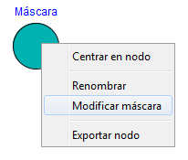
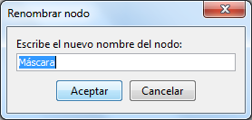
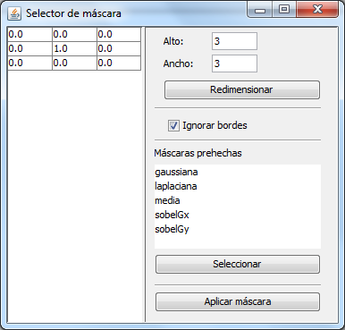

Modificar propiedades de los nodos
Muchos nodos tienen propiedades que afectan a su funcionamiento (por ejemplo, la máscara de un nodo de máscara). Estas
propiedades se modifican haciendo click derecho sobre el nodo que queremos modificar. Se abrirá un menú donde aparecerán
varias posibles acciones.

La primera propiedad que se puede modificar es el nombre del nodo (propiedad que comparten todos los nodos). Pulsando
en esa opción se abrirá una ventana donde se nos pedirá el nuevo nombre del nodo.

El resto de propiedades dependen ya del tipo de nodo. En el caso del nodo máscara se puede modificar la máscara y la
política de actuación con los bordes.
